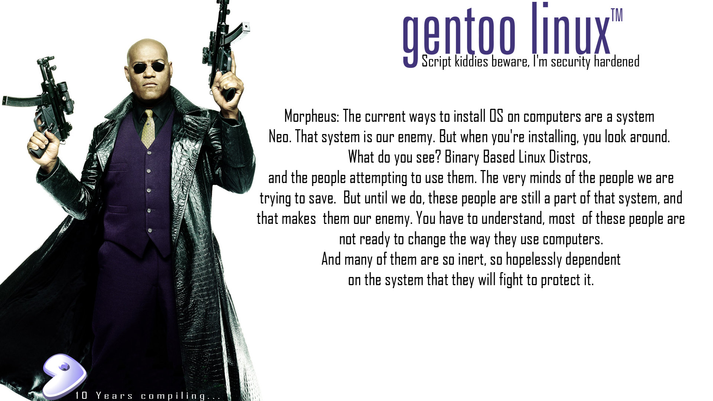

Gentoo Linux en una netbook (2010, parte 2)
Le invito a continuar leyendo esta segunda parte de la Guía de Instalación de Gentoo Linux para una netbook.

En este fondo de pantalla aparece Morpheus, personaje de las películas The Matrix y muestra un diálogo alterado de cuando Morpheus le explica a Neo qué es la Matrix. Claro que el resultado es una divertida exageración. He aquí lo que dice en español:
Morpheus: Las formas actuales de instalar un S.O. en computadoras son un sistema Neo. Ese es nuestro enemigo. Pero cuando instalas, mira a tu alrededor. ¿Qué es lo que ves? Distros Linux que se basan en software binario y a la gente que intenta usuarlos. Las mentes débiles de las personas que tratamos de salvar. Pero hasta que lo logremos, esas personas seguirán siendo parte del sistema y las vuelve nuestro enemigo. Tú debes de entender, que la mayoría de la gente no está lista para cambiar la forma en que usa sus computadoras. Y muchos de ellos están tan dentro y son tan dependientes del sistema que pelearán por protegerlo.
Este fondo de pantalla fue elaborado por likewhoa. Puedes descargar éste y otros más en http://gentooligans.com/GentooTenWallpapers2009.tar.bz2.
Le invito a continuar leyendo esta segunda parte de la Guía de Instalación de Gentoo Linux para una netbook. No deje de leer la primera parte.
Use el profile desktop
Cambie el profile a desktop:
# eselect profile list
# eselect profile set default/linux/x86/10.0/desktop
# eselect profile show
# env-update
# source /etc/profile
# export PS1="(prescott) $PS1"
Modifique la variable USE en /etc/make.conf con los parámetros que definen las dependencias y uso del equipo. Estos son los que he elegido:
# Redes
USE="${USE} bluetooth cups ppd samba wifi"
# Desarrollo. He desactivado java, más adelante lo activare
USE="${USE} apache2 -java mysql php postgres ruby vhosts"
# PHP
USE="${USE} ctype imap json pdo refection spl xml xmlrpc xsl"
# Graficos
USE="${USE} fontconfig gd graphviz gs imagemagick"
# Entorno XFCE
USE="${USE} -gnome -qt4"
USE="${USE} thunar xcomposite xscreensaver"
XFCE_PLUGINS="brightness menu trash"
# Sonido
USE="${USE} amr amrnb amrwb cddb cdparanoia faac faad flac -gstreamer"
USE="${USE} lame mtp speex theora"
# Video
USE="${USE} a52 css dv dvb fbcon ffmpeg live matroska mplayer rtsp"
USE="${USE} shout v4l v4l2 vcd win32codecs x264 xvid xvmc"
# Otros
# gnutls es para cups y lo pide firefox
# kpathsea es para LaTeX
# nsplugin es para que vlc y java instalen plugins para firefox
USE="${USE} gnutls joystick kqemu kpathsea nsplugin"
También aproveche el editar el contenido de /etc/make.conf para agregar los parámetros de X.org
#
# X.org
#
INPUT_DEVICES="keyboard mouse synaptics joystick evdev"
VIDEO_CARDS="fbdev intel"
Instale el software básico
Los siguientes programas son indispensables:
# emerge gentoolkit reiserfsprogs dhcpcd dosfstools screen logrotate iptables pwgen
Instale ALSA
# emerge pciutils alsa-utils
Y configúrelo:
# nano -w /etc/modprobe.d/alsa.conf
Este es el contenido de /etc/modprobe.d/alsa.conf para mi netbook:
# ALSA portion
alias char-major-116 snd
# OSS/Free portion
alias char-major-14 soundcore
# Intel High Definition Audio
alias snd-card-0 snd-hda-intel
alias sound-slot-0 snd-card-0
# OSS/Free portion - card #1
alias sound-service-0-0 snd-mixer-oss
alias sound-service-0-1 snd-seq-oss
alias sound-service-0-3 snd-pcm-oss
alias sound-service-0-8 snd-seq-oss
alias sound-service-0-12 snd-pcm-oss
# More aliases
alias /dev/mixer snd-mixer-oss
alias /dev/dsp snd-pcm-oss
alias /dev/midi snd-seq-oss
# Set this to the correct number of cards.
options snd cards_limit=1
# Autoload model
options snd-hda-intel index=0 model=auto
Instale X.org
# emerge xorg-x11
# emerge freefonts terminus-font ttf-bitstream-vera corefonts artwiz-latin1 dejavu
Instale el gestor de ventanas Fluxbox, el monitor de sistema Conky y la terminal XTerm.
# emerge fluxbox conky xterm
Instale servicios para log, cron, acpi y ntp.
# emerge syslog-ng vixie-cron acpid ntp
Estos servicios y otros más deben iniciarce al encender el equipo.
# rc-update add alsasound boot
# rc-update add consolekit default
# rc-update add dbus default
# rc-update add hald default
# rc-update add syslog-ng default
# rc-update add vixie-cron default
# rc-update add acpid default
Instale bases de datos, el servidor web Apache y PHP.
# emerge postgresql-server
# emerge mysql
# emerge apache php
# emerge samba cups gtk+
Ya instalado el GTK+ podemos instalar más programas útiles que dependen de éste.
# emerge sudo fusesmb geeqie xscreensaver
Para hacer consultas en el portage, el eix es más rápido que emerge -s
# emerge eix
# emerge eix-update
Si tiene un procesador Intel le conviene instalar powertop, un programa que identifica los procesos que más energía consumen. De forma similar, son útiles cpufrequtils y acpitool.
# emerge powertop cpufrequtils acpitool
Instale Ruby:
# emerge ruby eruby rubygems redcloth
Revisión de dependencias y actualizaciones
En /etc/portage/package.use puede confugurar las opciones de la variable USE de forma directa para cada paquete.
# nano /etc/portage/package.use
Yo tengo este contenido en /etc/portage/package.use:
# Sin GTK+
sys-devel/gcc -gtk
# Sin gd
sys-libs/glibc -gd
# Udev
sys-fs/udev extras
# LaTeX
app-text/texlive extra pstricks
# Tight VNC
net-misc/tightvnc server
# OpenOffice.org templates
app-office/openoffice templates
# Compiz-Fusion
x11-wm/compiz-fusion emerald
Revisamos que no falten dependencias y que se actualizen los paquetes que tengan nuevas USE:
# emerge -puND world
# emerge -uND world
# python-updater
# perl-cleaner --all
Establecer cuentas y contraseñas
Establezca la contraseña de root
# passwd
De de alta a un usuario. Sustituya USUARIO por su nombre de usuario.
# useradd -g users -G tty,wheel,audio,cdrom,video,portage,cron,usb,lp,plugdev -m <USUARIO>
# passwd USUARIO
Fin de la segunda parte
En la tercera y última entrega instalaremos el entorno gráfico y detallaremos el proceso de empacamiento e instalación.